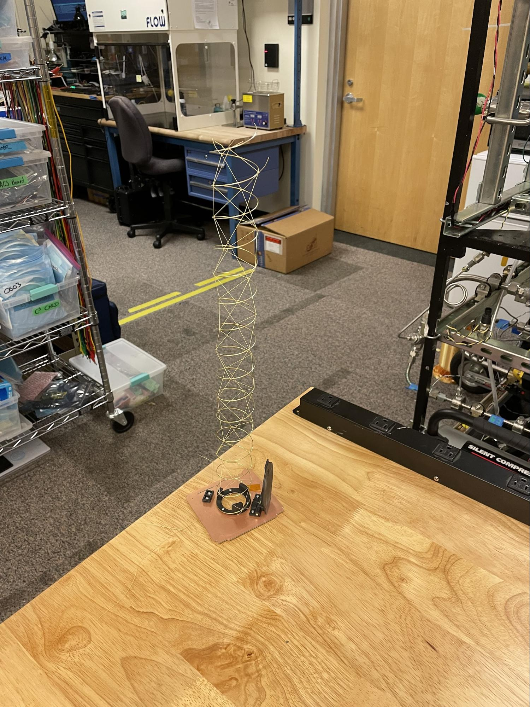
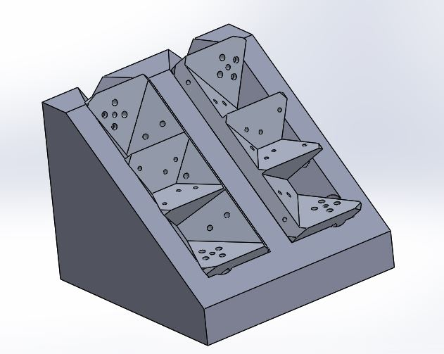

2022-MM-DD - Frame Proposed Changes Review
Peeps: Hayden
- Skiinying of -X frame backplane rails, currently 4.5 proposed 4.0
- 3U -x 4.0 = 240.464 g
- 3U -x 4.5 = 242.724 g
- 3U y 4.0 = 180.053
- 3U y 4.5 = 181.383 g
- Leave y frames at 4.5, x frames at 5.5mm boss width
- 2U moving of orthogrid to exterior, skinnying up of solar panel contact rails
- Overhangs less than 0.5mm then its ok
- 3U more card slots, more uniform cardslots
- 3U mid U solar panel backplane hole standardization
- Flip flopable solar panel, see if it works either way

- Backplane bump standardization
2022-06-26 - Structure Meeting
Peeps: Cass, Andrew, Joe, Jack, hayden, Alex
- Discussion on OnShape transfer
- CAD intern lol
- Mates suck but whatever
- No subassembly masses
- Doesn’t handle LV4 very well
- OnShape licensing
- $1500/yr or educational (we’re educational)
- Inputs / how to use the software
- Advanced features: Configurations, circles of hell, etc.
- Maturity: deliberately avoiding
- VisualDiff (Boolean XOR) might be a useful tool here
- Test the hell out of the new wedge system by building up an Oresat
- Move to OnShape
- Move to new wedges and Onshape
- Move to new wedges and Onshape
- Move to new wedges and Onshape
- Are we flying 1U solar panels? Yes!
- Is the flat turnstile antenna idea dead?No, not really, but we’re not gonna do it
- Why is acs in the middle anyways?
- Center of mass, and easier to turn the satellite
- These fasteners are suppressed… are they still being used? Is there any reason to use vented fasteners? (Uccomponents-MBU-208)
- One of those holes is blind, so yeah, we need at least one, might as well make them both vented
- Choppin off a part of a new shank to fit into coil winder coupler
- I can do this at home, and will!
- Epoxy
- Status of the X/Y torque rods and annealing?
- This continues to be the #1 pain with dealing with deployers
- What turnstile antennas are we flying now? Fiberglass?
- If we’re flying CFC can we get away with the tape measures? (2 antennas?)
- Different material maybe? Make them thinner than ¼ inch?
- Also: should we stock up on those tape measures?
- Is the CFC mechanical “done?”
- VHF monopole element is 600mm for 118 MHz? Way too long to coil up for a mid satellite similar deployment system as the turnstile
- Can we wrap antennas around the satellite? Cant do around the rail, could go around the +/-z
- Spring loaded disk that pushes out wires when the spring is released
- Do we have heat resistant Form resin for a new helical jig?
- Solder bumps seem to be working really well… is it worth trying a helical antenna with straight threads rather than the current (difficult to produce) helix design that we know works but does slightly obstruct the view?
- Sure, go nuts, straight threads are fine
- The tolerance between OL Lens mount and the hole in the endcard is 0.03mm, between Lens mount and OL Base is 0.16mm… do these tolerances need to change? Tight fit is desirable but how tight? (This doesn’t include kevlar threads for helical which are currently routed through the middle of the board)
- Notches in the hole for the lens mount
- No; we still have the money for it.
- Apparently emmy did a “hand off” of this somewhere?
- This is still being worked on - lots of changes around radiators, copper size
- Structure Github Project: HERE – Review at end of every meeting
2022-6-19 - No meeting today
2022-6-12 - No Meeting Today
2022-6-5 - No Meeting Today
2022-05-29 - Structure Meeting
Peeps: Andrew, Emmy, Cass
- Video or Haiku or image of the week:
- We should schedule handoffs?
- Video zoom call to go over
- Write a couple page doc about the system
- Reaction Wheel
- Helical
- Frames (Capstone) / Hayden / Emmy / Marvin
- Thermal
- Casptones Ideas planning party?
- Brainstorming time next week
- Working on fit check today
- What are we doing about weight - Marvin will reduce CFC for now
2022-05-22 - Structure Meeting
Peeps: Hayden, Marvin, Joe, Andrew, Cass and Emmy
- Sent off 5 sets of 2U frames with new wedge design on Friday
- Said no to Transporter-6 via Momentus: New handoff is October, flight in January
- This probably pushes out OreSat1
- 1.5U spec is 2.00 kg, and we’re at 1.95 kg
- 2U spec is (CDS = 2.66 kg / Nanorack = 4.0 kg) OreSat
- COM spec +/-4cm, -2.8cm (close but still OK)
- Move everything from 1.5U to 2U frame in CAD
- Make a “minimal copper” CFC; possibly attach this to the frame? Take pictures as we come out of the earth’s shadow?
- Can we replace the lens with something REALLY small? Will help with turnstile, too.
- Discussed doing two 1Us instead; we think that’s not viable since there’s not enough “end card” space to fly an outward facing payload like OL / CFC.
- What do we want them to do?
- Document everything
- Want to crush a 1.5U
- Concrete crusher with 1 klb tick;
- There’s not a great reason to crush except compare to sim; do they have sims? Could do the crush now, sim later
- Sim needs to have plasticity data. Run a static analysis first, followed by a linear buckling analysis, and then rik’s nonlinear buckling analysis.
- Need to have a conversation with Tom
- Should capstone meet with uteap people to talk project details for report? Absolutely yes.
- Simplified CAD model for vibration modes, etc?
- Use surfaces that auto generate from the structure, run a comparison study to see how detailed the simplified surface needs to be to get similar modes of vibration to the frame. See if literally a square surface can appropriately predict modes for the full 3D structure.
- Push down the center axis and see what load causes cards to either pop out of the card clamps or causes material fracture
- Need more movement on this now; what next for bearings?
- Cass says to do a wear-in first before vibe; this is a good idea
- Do a vibration test with the original bearings? Maybe?
- Find other, better bearings.
- Find a grease?
- No updates!
- Yes, you can bring in the copper to leave more “rod” exposed, just make sure that the copper on the solenoid cores does not touch
- MAKE UTEAP ORDER THE CHUCK
- Waiting for a 2U frame to send to Nanoracks
- Can we switch to a flat turnstile coming out of the middle of the solar cell?
- That seems a bit too complicated, especially with the limited volume we have
- Can use a dipole for VHF, would be interesting to explore
- So, yes, worth poking at just a bit. Hayden volunteers as tribute after capstone
- Lol no updates I’m a bit busy right now
- Finalizing sim with Danny on tuesday
- Will make hayden’s edit to drawings
- Will cut into deployer this week for last tolerance check
- WANT UTEAP TO DO THIS! So soon.
- Light baffle!!
- Minimal copper design
- Working with Weston on the CAD
Structure Github Project: HERE – Review at end of every meeting
2022-05-15 - Structure Meeting
Peeps: Andrew , Marvin, Cass
- New people?
- Project Management
- Video or Haiku or image of the week:
- Structure Capstone
- Cards
- Backplane
- Solar panels
- Reaction wheels
- Magnetorquers
- Inhibit switches/Battery
- Deployable antennas
- OreSat Live:
- Cirrus Flux Cam: N/A
- Star-Tracker:
- Thermal
- Handheld Ground Station
- Structure Github Project: HERE – Review at end of every meeting
2022-05-01 - Structure Meeting Template
Peeps: Jack, Cass, Joe, Tristan, Emmy
- New people?
- Project Management
- Video or Haiku or image of the week:
- Sapna Rao and Lockheed Martin speaking on Tuesday @6:00 pm
- Oresat 0.5 is probably happening, 1.5U or 2U?
- Handoff in July, flight in October
- Finished no-triangle frames, ready for design review
- Wed, May 4th. 9:30am design review!
- Wear a star wars costume or Emmy will use the force on you
- Hybrid bearings are probably the best, silicon nitride or silicon carbide
- Wear in test before vibe test???
- No updates!
- Need to bug Hayden about an intro to Torqueducks before he graduates!
- Pick out an epoxy for magnetorquers??
- Turnstile antenna epoxy maybe?
- Is the helical done?
- Andrew wants metal prints for OL lens mount
- We NEED to check the tolerance to make sure that it actually fits
- Finished cold case
- Working on hot case
- Possibly changing time
- Has Marvin done the new phone clamp? I was thinking about it the other day…
- Structure Github Project: HERE – Review at end of every meeting
2022-04-24 - Structure Meeting
Peeps: Andrew, Cass, Jack, Hayden, Emmy, Tristan, Weston, Marvin, Joe, Alex
- OreSat0 is still in space - still can’t talk to it. We’re runnings comms tests today.
- OreSat0.5 is still on hold
- UMBC wants us to fly CFC on 0.5. Yikes. Does 0.5 become a 2U?
- Supposedly Zach printed a frame with new wedge design
- Zach? What’s up?
- Marvin will message David Maguire
- Next steps?
- Looking for better bearings - VXB? Or? Maybe Tristan will help look (see Google docs)
- Possibly a new method of putting the bearings in
- Press on the outer raceways only, and flat of course
- Do we need to break/wear them in?
- Yes. This is a great idea. Next step: Let’s spin them!
- Measure the run out of each motor with and without the brass wheels
- Wearing in the motor (letting everything “settle”)
- Burn in testing - running everything hot (like running a stalled motor)
- Cass going to Hall tool for a small chuck
- If we do cfc, we’re going to need fiberglass… lets start to figure this out because we’re going to need it anyways…
- FASTER JACK FASTER MAKE MOAR
- SICKNESS IS NO EXCUSE <- Marvin agrees
- Drawings in!
- Make some some time! Cass might be able to or find someone else?
- Will ask Ed from EPL to test my TVAC SOP (great!)
- New meeting time?
- Structure Github Project: HERE – Review at end of every meeting
2022-04-17 - CANCELED
2022-04-10 - Structure Meeting
Peeps: Cass, Marvin, Tin , Jack, Andrew, Joe, Alex
- OreSat0 is still in space.
- OreSat0.5: Handoff looking like May 2nd?
- May push off because RW bearings and helical is broken and software/firmware
- Smallsat paper accepted! YAY!
- Andrew where can I find the order number and information for the hub's reaction wheel order?
- Brass RWs and cover plates: Order # C-1X97Z5CKP
- Do we want to move to the new wedge design for 1.5U?
- If so, I (Marvin) will begin working on that ASAP
- Waiting on solidworks license - David
- Will start working on 1U frame machining, waiting on drawing
- Vibe test produced no FOD / dust / eldritch horrors
- But, the bearings sound significantly worse – maybe runout?
- It seems to me like the reaction wheels are not square. Have we spun them up?
- Wire wiggled loose around z-axis
- Rubbed some against the frame
- I need a new chuck! Halp
- YAY CASSS!!! Now just make an sop :,,)
- Hayden wanted to do a freezer test/long term compression test
- Magnetorquer failure
- Reaction wheel failure
- No FOD
- Still no drawings from Kayla
- TVAC is up and running
- Structure capstone team is working on 2U
- Structure Github Project: HERE – Review at end of every meeting
- Haiku:
- OreSat: “Hello, world!”
- “Your mic seems to be muted.”
- “It’s very quiet…😢”
2022-04-03 - Structure Meeting
Peeps: Marvin, Jack, Emmy, Cass, Dharshanika, Joe
- New people?
- Project Management
- Video or Haiku or image of the week:
- Soyeon Yi!
- Orientation is on April 12th - there will be pizza
- Alumni event is April 9th
- Marvin continues to be behind on work–fingers crossed this week the new wedge/frame design will be finalized
- Wedge cutouts in the +/- Y frames seem to be… shorter? Smaller? Something? That causes the wedges to rub into the cards even when the fasteners are all the way out
- Someone check the 1.5U frame?
- You'd really want to do it with cards, and put masses on the cards to stand in for the components that go on them. - Joe
- Let’s peep post vibe!
- Will wrap at least one new solenoid
- Talk to torqueducks about solenoid annealing!!
- Nanoracks now knows that Oresat1 is going to catch on their deployer and we’ll be sending a 1.5U for them to test
- No audible damage, inspecting today
- Vibration seemed louder/different on +y vs +x axis. Likely the reaction wheel brackets mounting to only one frame
- If we wanted, we have space for a flat plate across the top of the reaction wheel brackets to stiffen up the assembly and distribute the vibration across the structure
- Started thermal sim but like problems happen like always something annoying happened
- Thermal expansion of CFC lens
- Marvin will take a look and do some sort of tolerance stackup soon
- Reviewing Zachs results soonsies
- Handheld Ground Station
- Structure Github Project: HERE – Review at end of every meeting
2022-03-27 - Structure Meeting
Peeps: Jack, Marvin, Hayden, Andrew, Joe
- OreSat0 is still in space, surprisingly.
- What's the actual plan for 0.5?
- Right now, we’re talking about 4/21 handoff in Florida
- Big missing thing (besides RW boards) is FCC “license”
- Monday Night Build Hackathon at 5:00pm
- Tuesday at 3:00pm
- Test plan
- Reaction wheel motors with hybrid bearings and wheels and magnets
- Beam with no helicoils (maybe 1 with locktite, 1 without?)
- Magentorquers, maybe without soaking the coils in epoxy
- Glued in MTs
- Helical
- Don’t need to tie another one, just test it unfastened, could use CRP though
- Battery pack since it’s next to the MTs
- CRP on the way! ETA monday?
- General
- Marvin actually took a spring break so didn’t get a ton done; expecting more this week
- What kind of load testing do they do on cubesats?
- See environmental verification specification / Launch vehicle specification
- Hubs documentation - this is very long overdue:
- Technically it’s not done, needs magnetorquer issue information and images of the untapped holes in the frames
- (hayden) I can tomorrow too
- Magnets are in, will be in the RR tomorrow
- Solenoid cores are on their way!
- What material is being used? Permalloy 80
- Annealing? Yes, if we have the time and U of O can actually do it!
- David said we have what we need to cobble together a -z turnstile?
- Do we have an antenna that we can use for Vibe test?
- My todo list is already on fire, for some reason a bunch of teachers assigned a crap ton of homework over the break and tests AFTER wtf
- Want to try a full flat coil on the bottom
- Through a slot in the board
- Needs to not hit press fit nuts
- Emmy added some tolerance, less than 0.1mm
- Tight fit is good
- 3d printed aluminum, do tolerance stackup
- Structure Github Project: HERE – Review at end of every meeting
2022-03-20 - Structure Meeting
Peeps: Marvin, Andrew, Cass, Hayden, Joe
- Sent a message into structure on Friday:
- “I’m doing a bit of healthy stalking and investigating of drawings at the machine shop that I'm working at, and I've found that I haven't seen a single drawing with all dimensions called out, Only the dimensions are relevant for inspection are called out, and everything else is just on a very loose/general tolerance in the title block.
In the note block, all of them just say something along the lines of “This is a partially dimensioned drawing used in conjunction with the 3D model”. This makes sense since the program would be made using the 3D model and the drawing would just be used to make sure the part made fits requirements.”
- Going to take a shot at this during this week after my final on Monday
- Hayden mentioned also having fully dimensioned drawings because of open source, but
- I think that a STEP file should be enough. All CAD programs can open up this file standard
- RELEASE THE… The… the… kraken hounds CAD?
- Let’s do a “GitHub release” on the 1U. Hayden and Marvin will.
- Back from Omniteq!! Will be in the RR later today.
- They fixed their deployer, works great now.
- Waiting for a video / photos
- Andrew will send off the issue list to Hubs
- Still on hold for new wedgies
- Marvin will get on it this week–from this week on Marvin can spend more time on OreSat
- HAYDEN FIX ALL THE THINGS (CAD, counterink RW wheel covers,no helicoils)
- 1.5U / RW / MT vibration test week after spring break
- New coupler printed
- Where the solenoid core material at 👀
- On its way! Ordered the correct length (83 mm / ~ 3.25 inches)
- Hayden will reach out re: annealing
- Cass will make new solenoids
- Kayla will get me drawings after finals
- Cass is figuring out cool stuff for deploying the helical quickly
- Thermal people simulate our OreSat0 orbit please like omg
- Structure Github Project: HERE – Review at end of every meeting
- Haiku:
- OMFG AAAH!
- The satellite is in space!
- What do we do now?!
2022-03-13 - Structure Meeting
Peeps: Marvin, Jack, Cass, Andrew, Emmy, JD, Joe
- OreSat0 is on for tomorrow at 09:22 PDT? We think? Meet at 08:45 until they scrub?
- Thank you for everyone who made the fit check great
- Mike said: “Yes, the fit checked worked out well and we have an immediate solution which we will implement early next week (I have already made arrangements with Tyler at Quad-M). As Andrew said it is an easy fix. It was a great pleasure to see Andrew and his team today and I must also add that their satellite is very well done. Top shelf! I will keep everyone posted on the fix next week.”
- Marvin can machine parts at BDE Mfg as soon as he is has had enough experience proving ops–people make their own parts very frequently, just need to provide own stock
- I can use their tools, but will need to replace when they inevitably break
- May ask to continue internship/job through the summer to get more parts made
- They have many 3-axis, some 4-axis, and one 5-axis
- Nanoracks for inhibit switch testing
- Send 1.5U instead of 1U with thicker inhibit switches
- Still need to do 3Dhubs screwup (see last meeting notes)
- M2.5 helicoil is eating away at fastener threads
- Missed threads
- Bad Anodization
- Buggered up hole?
- Supposedly CPP has someone in the shop ready to review the drawings again, and should be able to machine them soon.
- Was able to do thermal experiment on the solar panel and frame and got a thermal conduction coefficient of . The +/- 0.41 is the uncertainty of conductivity which is very high. This will continue to be tested with different equipment moving forward.
- 0.63 w/K is disappointing low - we should start to think about thermal interface materials.
- Something non-electrically conductive, something that won’t trap air in the grid, something that doesn’t outgas


- OMG NEVER USE ELECTRICAL TAPE ANDREW WILL MURDER YOU ALL
- Use Kapton tape instead
- Will be working on understanding LabJack during spring break as we wont have access to the lab from 411.
- Airframe capstone replicated one of the 411 labs on the labjack, it works great! Bug us for help
- Also: please look at the thermocouple DAQ on top of your box
- FEA will be priority going forward and we have a much better understanding of the program due to the FINAL. So we are optimistic that the analysis will be “Top Shelf” <3.
- Sending frame files out to a local manufacturing company for a quote. I hope to ha
- Low volume is going to be very expensive for local machine shops, and some may not even quote you since they are all very busy. Lots of them are just deleting requests that are insignificant nvm
- Complete mockup done!
- BUY MORE MAGNETS
- Stripped my solenoid coupler, so printing a new and improved one
- Shorter solenoids WIP
- Solenoids between 3.125 and 3.5 inches please!
- Sent a message to torqueducks asking about annealing process
- Sent Jennifer a message about reviving helmholtz cage
- Going to write up a document on all of the fit checks & issues we have had with different deployers for reference
- Did another assembly with wire through board
- Could not compress helical against PCB with through thing
- Going to try a slot through
- Did not work because helical would not stand up straight
- This is likely because the tail was not parallel to the helix axis
- For this to work I think it needs to have an even force on all sides so that it can actually be adjusted
- If the base is not parallel, constraining it just compresses the spring more than it changes the angle
- Suggested ideas:

- Got the all clear yahoooooo!
- Kayla will be getting the drawings to me sometime this week and then i will build~
- Fit up to 2U
- Haha, doesn’t fit in helical antenna endcard - crap

- From Old Commit (8508fecf6eb784d124a83d0edf1fda09103185bf) back in late Ded 2021
- Do we have lenses? Yes, we have some spare star lenses
- No more baffles? No longer in use!
- Where is the thermal simulation of D2D orbit you scallywags!!?
- Structure Github Project: HERE – Review at end of every meeting
- Haiku:
- Oh seven hundred
- Will we go to space today
- Shrugging emoji 🤷♂️
2022-03-06 - Structure Meeting
Peeps: hayden, Weston, Emmy, Jack, Joe, cass, Marvin
- Flight is no earlier that 3/13 - 3/15th (definitely before the 17th)
- If you are planning on going let Andrew know like ASAP
- Serializing frames? Suggestions?
- Probably just Kapton tape
- Anodization on Y frame bosses
- 1x Y frame had 2x untapped holes
- 3x Y frames don’t have M2.5 STI holes, they have M2.5 holes?!
- 1x -X frame had 1x untapped holes
- 1 bracket has really sticky threads
- What are we going to do about all the mistakes?
- We’re going to carefully review each piece
- We’re going to write up a report and yell at Hubs
- Should we do the 2U with the new wedge design? Or another 1U?
- Nah, let’s start with a test piece first, maybe with different ramp angles
- Then let’s a 1U to test it out for realsies
- 2 vs 3 screws - probably OK? Discussion?
- 3 fasteners fit nicely in the isogrid
- We’re losing 30% of our clamping force
- Make sure it can hold heaviest payloads like CFC and battery
- 3 screw designs have two clamping parts with one failed screw
- Think about edge cases;
- Startracker
- -z solar connector
- FEA modal analysis of all the parts
- Can’t make it today, nothing to report
- Drawings show M2.5, NON STI (whoops)
- Still need to machine out C-clip countersink
- Will do imprecise by hand!
- UPDATE CAD!!!!!!!!!
- Hayden and Cass getting together this week to put er all together]
- Yes you will be putting the whole damn thing together Sheeesshhhh
- New sized plungers are in, fit in the 1.5U frame. @marvin?
- Marvin will come in later Sunday
- Actually jk my parents stole the car :(
- Turnstile (and other things) CRP!
- Helical: (I have a lot)
- Redid +Z endcard and endcap CAD
- Using new burn wire clamp design like the turnstile
- Using locator pin to prevent side-to-side wobble of deployer lid
- Deployer lid looks pretty
- Hinge to capture spring:
- Endcard pcb updated and routed, using m2 press fit nuts
- Assembled Helical Antenna with new deployer, using a ‘plumbob’ to get it square, looks like it works pretty well
- Helical antenna catching on base, trying new base sizes today
- Whole thing fits into deployer great!
- Seems to have more rigidity and better adjustability using threads that wrap around the outside:

- Try a deployment test
- Try alternate bases to determine which one fits best, wider base may provide more stability but catches on the coil
- Send parts to Hayden for CRP windform (STEP and STL)
- Meeting with Dr. Cal 3/9 to discuss final design changes before building
- Thermal Desktop hates me
- Got the power budget from David
- Going to play around with the PSAS computer and see if I can use the td there
- Update on D2D orbit? Zach?
- Any updates from capstone?
- Now the helical will surface mount solder onto the top of the PCB, and there are ICs now right there where the helical solders in.
- Structure Github Project: HERE – Review at end of every meeting
- Haiku of the week:
- Here we go, baby
- Time to frantically google
- "Flight to Alaska"
- Prep for Mike from Omniteq on Friday 3/11
- +Z end cap – Jack gets DXF to David who routes on the LPKF
- +Z end card – Jack figures out “final” deployer and puts in a meltwire to keep it stowed.
- Solar panels – we’ll just use the 1Us
- -Z end card – we’ll flip over a OreSat0 +Z end card?
- -Z end cap – we’ll use a OreSat0 +Z end cap
- Battery Card - Marvin will put together new inhibits on old routed card on Tuesday
- TUESDAY EVENING 8:00 PM OreSat0.5 MECHANICAL MOCKUP WORK PARTY
2022-02-27 - Structure Meeting Template
Peeps: Jack, JD, Cass, Hayden, Joe, Andrew
- Hehe, we’re going to build OreSat 0 tonight…
- Working on ODAR? Stuff for OreSat0.5
- Waiting on IARU
- Figure out CRP order - all the 3d printed crap
- NEEDS to be fuckin DONE by thursday
- Shipping; in on Wednesday March 2nd
- Found that vacuum tape works amazingly well! THANK YOU ANDREW G.!
- Testing to be done Wednesday 3/2
- Figured out Labview for this testing so all should go smooth
- Solid models in the works
- Possible idea for a, wait for it…. UNIWEDGE!
- Idea for making a ramp where the cards rest but model isn’t working so will have to show later
- Hope to have new quotes soon
- PDS report with reduction of cost and hardware should be ready next week
- Any progress on wedge hand calcs? Or is this a marvin deal?
- I changed the panels to have two pv cells EMMY
- Reaction wheels and brackets are in!
- C-clip not accounted for
- Manufacturing brackets seem to work! Need screws and helicoils from latest mcmaster order in order
- Solenoids and z-axis wrapped \o/
- Need to assemble with the new RW brackets and put in a frame!
- Need to send off CRP!
- All mechanical is exactly the same, Flipped sides
- Helical: Guess who actually did something?
- Everything is smoking… not on fire yet
- Mostly done with SOP
- Working on deployer (it’s different I promise)
- Finish the deployer cad
- Update the endcard cad
- ROUT A DAMN PCB ALREADY
- Redo the helical antenna cad itself
- Assembly and completed SOP
- Drop tower test
- No word from Raul yet to schedule design review meeting
- Structure Github Project: HERE – Review at end of every meeting
2022-02-20 - Structure Meeting Template
Peeps: Jack, Emmy, Marvin, Andrew, Weston
- Nothing new on OreSat0 (still on hold)
- Nothing new on OreSat0.5 (still last week in March - Monday 3/28)
- NOAA cert is in; FCC/ODAR today
- OreSat Live Grant ARRL being finished up this week
- Marvin is starting at BDE Manufacturing this week, but no clue if I’ll be able to use non-company hours to machine a frame (they’re very busy). I’ll have access to a 3-axis mill and maybe 4-axis, but probably not their 5 axis.
- Anything less complex for me to ask them to machine? We’d probably need to purchase the stock
- Frames should come in this week!
- Waiting for SLS prints to come back
- Still waiting for response from CPP–not banking on them getting us anything
- :(
- Working on thermal testing
- Wheels are in
- Shipped a motor set off to Solomon in Boston to spin motors
- Replaced ~ 6 motors with hybrid bearings
- Cass wound the Z axis MT! Now we have all three.
- Time to prep them for flight.
- Do we still need to remove 2 inhibits, or has someone already beat me to it?
- Wait until when we know we’re going.
- Hehehe, guess who didn’t do anything…
- Working on
- Fixing cad and deployer with thread continuations
- Cindy finally worked with me about getting thermal desktop to work so reviewing the tutorials
- Marvin- should I make it in the OreSat assembled sim or a separate system
- In the central oresat assembly!
- Extend the copper lens holder down to the PCB, avoiding regions where there are components
- Marvin has found an idea for a redesigned system for the HGS–still need to look more into it
- Note: Very crappy printers may not be able make these
- Structure Github Project: HERE – Review at end of every meeting
2022-02-13 - Structure Meeting
Peeps: Marvin, Cass, JD, Joe, Andrew, Emmy, Hayden, Jack, 2nd Andrew, Alex
- I hate you whoever asked this question.
- Waiting for Spaceflight
- We have no actual idea? >1 and < 6 months?
- Handoff still March 28th in Santa Clara, CA
- Does anyone know if there are any good MasterCAM tutorials?
- Want to eventually make the new wedge/frame design
- Titans of CNC - Youtube channel with MasterCAM tutorials
- T-1 week until the first of the machined parts are in
- CPP may be able to manufacture 3U frames at their own shops–campus just opened up
- Andrew needs 3U STL’s
- Quote for new design came in higher
- Removing more material so costs more
- More ideas coming
- Thermal Simulation complete
- Andrew G. will get update on Thursday
- Putting together a powerpoint for PSAS (Should be ready for tomorrow’s Thermal Meeting.
- Had a set-back as my daughter was sick all week
- Kids are the plague bearer
- Better drilling fixture based on @joe’s suggestions, able to be perpendicular to the surface
- 
- Changing out bearings on the 1106 motors to hybrid bearings
- Shipping the new 3D printed frames to Solomon for electrically spinning motors
- Z axis coupler printed, i’ll try this week!
- Karl says new rig should work
- Will arrange a time to meet with Karl and Dr. Cal soon to talk details
- Like theoretically working on thermal today
- Waiting on gasket - arrives tomorrow! Monday 2/14
- Old TODOs that we moved over to github: here
- Structure TODOS HERE
2022-02-06 - Structure Meeting
Peeps: Marvin, Jack, Tin, Joe, Kayla, JD, Tin, Faadil, Kayla, Andrew, Weston, Cass, Alex, Emmy
- Firmware update / removal of inhibit switches is now Feb 22-23
- Launch is now NET March 8th from Kodiak
- Who should go up to Seattle in late Feb? Just looking to plan ahead
- Put your name here!!!11!!! Jack, Cass!, MarViN
- Andrew, a firmware person, and a ME at the very least
- We need to: +X remove solar module, remove 6bzillion screws, remove +X face, remove +/-Y solar modules, remove battery screws, pull battery, pull an inhibit, and then put everything back. So… Marvin, for sure, because of the number of screws.
- Title: “Designing and Maintaining a Scalable Interdisciplinary Open-Source CubeSat Standard for Small Academic Teams”
- Frames in manufacturing; unclear where they’re being made?
- Hey! Let’s make these now.
- If we have the funding, it looks like we’re ready w/ the drawings!
- Oh wait are we holding for the single piece wedges? Probably?
- Maybe will have an update from CPP–beginning meetings with Pleiades again on Tues 2/8 (although not very optimistic)
- I’d really like to 3D print these; can I get STLs?
- Not to get our hopes up, but the company I’m interning at soon (BDE Manufacturing) has a “museum” of CNC mills that they arent using, so I might be able to use them. Only maybe
- (Marvin) What are y’all looking to do with the force calcs I’ve worked on? If you all have other things to work on, I’ll continue working on it
- Also includes calcs for optimizing the new wedges
- FEA Starts Monday 2/7/22.
- Getting quotes on new-ish frame design
- Continuous mill run / opened spaces
- Thermal simulations have started
- BUT WHAT ABOUT MARVIN?!!?! LESS SCREWS?!
- Is hayden here? no
- Cass will figure out git access / dimensions to print a new coupler this week
- Let Marvin know if you need help with git!
- Nanoracks has OK’d the idea of us sending 1U frame with inhibits to test on their vibe deployer
- Correct me if I’m wrong, but as far as I can tell, the only solution to our issues with the inhibit is just removing 2 for ISI deployers (which are common)
- Unless with somehow move away from in-rail inhibits, but seems unlikely
- “God, it’s like going pants shopping in different stores.” - Cass
- This is going to be more difficult than I thought, constraining antenna to straight is not working very well
- Currently using threads under the plastic center piece
- Attaching thread to the board?
- Moving support threads farther away from the center for more stability?
- At least it fits in the deployer
- Fell behind with a busy week, will have an update this week
- Anything from Vanderlei yet? No, waiting on Trinket code before we send
- Zach has made a good amount of progress on the OreSat0 sim!
- Put the TVAC together and tested the BOC-Edwards roughing pump while having all valves closed
- No noticeable improvements
- Did a maintenance check on the labconco roughing pump and noticed an oil leak
- Andrew mentioned Projects on github and I looked into it a bit
- We should totally use this for project management
- Cass is still looking for parabolic test flight ops
2022-01-30 - Abstract for SmallSat
- Working title: “Design of a Scalable CubeSat Structure for Academic Teams”
- Structural (Use OSCW for reference)
- More than enough; can be optimized
- Clamping force and vibration
- Vibration testing w/o loctite
- Standardized design (COTS fasteners)
- Mechanical and electrical “interface control” for subsystems
- Packing densities compared to standards (PC104)
- Scalability (1-3U)
- Thermal simulations
- Wedge for thermal tuning
- Machinable by students using a 3-axis mill / 2.5D CNC router
- Project and Design Management
- Git and Github (should be including issues, but we don’t use those very well)
- Should we look into Github Projects?
- Workflow (Solidworks → git → github)
- Other options include other CAD software also also gitlab would allow for the same workflow
- Benefits of Pull requests
- Branching and managing merge conflicts (mainly just coordination and what to do if there is a conflict)
2022-01-30 - Structure Meeting
Peeps: Jack, Marvin, Cass, JD, Tin, Joe, Hayden, Emmy, Alex
- New people?
- Project Management
- Video or Haiku or image of the week:
- T-21 days I guess maybe till astra
- February 7th trip to seattle, pull apart oresat0, pull out battery card and remove inhibit switch, update firmware
- Last week of march california handoff
- What other machining companies have we looked at?
- SMALLSAT ABSTRACTS DUE ON THE 1ST!!!
- Cass is a p good editor, holler if you’d like another pair of eyeballs
- Thermal/clamping paper?
- Deployables paper?
- COORDINATING SUCCESSFUL EDUCATIONAL PROGRAMS
- Project management style paper, all volunteer, mechanical CAD in git (open source), making a project/a standard
- “Why all our students are addicted to coffee (besides Hayden)”
- Picosat talk at 8pm on tuesday
- Have we sent SEDS update?
- 1.5U They haven’t asked
- Spaceflight pictures are just waiting final approval
- Didn’t get much more progress on those calcs–busy with school
- I’ve just kept them in my own git repo right now, not sure where to put it. Any ideas?
- Add another folder in root
- Frames: 2/18
- RWs: 2/22
- Wedges: 2/23
- Wheels: 2/14
- This is next!
- Drawings are done
- OK: Wait until single clamp system is done / feedback from Capstones
- On hold until someone volunteers to make one for us
- NN - Divided up tasks, working on them now
- Tasks are:
- FEA (full analysis wanted)
- Plastic deformation from screws
- Clamping force on cards
- Vibrations modes
- CubSats stacked in deployer
- Force of the spring in deployer
- Thermal Simulation
- Thermal Desktop
- Model new changes on frames and parts (solidworks)
- Thermal Vacuum chamber (sending bodies to help)
- Drawings for Solidworks
- Jigs
- Torque on Screws
- Tooling ordered, figuring out how to break taps on the CNC this or next week
- Printed Form3 beams + brackets, they’re on the flatsat table
- Sliced version of 1.5U

- 2 step process makes a pretty good solenoid! Can get one completely wrapped relatively consistently
- Will CAD up a way to mount z-axis to winding machine now that i have measurements <3
- What next with solenoids? Do we want 2-3 coiled up for next steps?
- Yes!
- Use Kapton tape to hold tension on the coils
- Leave 5 inches of copper wire on either side
- Make sure the UO MTs are long enough to fit in the current MT assembly
- If they do, let’s unwind them and re-use
- If the do not, let’s keep them and order new Permalloy
- Eventually, we’re going to soak these in 3M 2216D epoxy
- 1U at Spaceflight should be OK as long as we take out two of them
- Antenna fits in the deployer!
- When jim mounted the deployer, was it centered?
- Can we get a board routed?
- Yes! Get Andrew the DXF when you have it
- Vibration test of 1.5U frame + RWs + MTs + Helical first week in March
- Got updated design last night, will send off to Karl on Monday and plan a time to review with Raul and Karl
- Maybe we could reach out for some help making a quick drawing from the CAD file so I can know dimensions/angles?
- Going to actually get started on the thermal analysis on it, but like have to learn things first
- Swapped thermal heater
- Cleaned some of the valves (will do some more cleaning today)
- Need to find leak sealant that isn’t permanent
- Marvin will get started on 1.5U as soon as finals are over
2022-01-23 - Sunday Structure Meeting
Peeps: JD, Marvin, Kayla, Cass, Emmy, Hayden, Jack
- New people?
- Project Management
- Video or Haiku or image of the week
- Andrew’s Notes:
- The Form3 should be back and running. Let me know what we need printed. I'm printing a set of RW parts for fun and for Solomon who's working on getting motors to spin.
- All the hubs bits are ordered. The RW parts come in the week of 2/14 and the frames arrive the week after. Hayden should continue to go nuts and machine all the parts anyway.
- Cass should go full tilt on winding the Z axis MT. Hayden had some ideas on how to jig that up, I think?
- We should now be focusing on the 2U, so we can get that machined next!
- Someone should tap and put together the 1.5U SLS print! - Jack
- The current card wedge/triangle system is too difficult to manufacture–likely will need to switch to single piece design for manufacturability sake
- Did some preliminary calcs on the new wedge design on Jupyter Notebook
- Will add to structure repo at some point…still working on it
- Trying to maximize the compression of the card while limiting the travel to prevent galling
- Machining the angle into the frame is going to be a pain for a non-standard angle
- Getting the drawings ready
- Turnstile - ON FIRE
- Designing improvements to the frames
- Adding more material for thermal contact
- Designing new ledge
- New task - do FEA on the entire system
- Redesign structure - do FEA on it and then FEA on current
- Torque calcs on the cards itself - potentially FEA
- I cnc’d a bracket
- B
- E
- A
- utiful
- Gonna buy some tooling to do holes, M2.5 helicoil tap, spot drill, and whatnot
- I guess we should try to consolidate the mcmastercarr order
- Issue with the DuoDeployer
- Marvin was looking at some papers (which he conveniently lost) on the turn
- Helical: (input on Wed, 19th) Kevlar prototype completed
- With regards to construction:
- Total construction time was about 4 hours and definitely sped up at the end (will probably be reduced next time).
- Knot tying was difficult but it was easy to get a system down.
- The solder bumps are all eyeballed and are pretty rough in some spots. I don’t think we need a jig for soldering because it’s easy to keep the solder on one side of the coil even with my shitty soldering skills. Some of the bumps are pretty bad because I am limited by my soldering iron.
- Getting it off the jig was HELL (roughly 30 mins of praying I wouldn’t bend it or cause one of the knots to slip or come loose). I think that it would be a good (and time-consuming) idea to design a new jig with a removable core and outer sections with the grooves for thread and coil that can be removed easily from the center.
- The kevlar does not slip against itself easily (which makes not tying kind of difficult) and it doesn't slide against the coil either.
- With regards to function:
- It is VERY straight (compared to the previous one). At least, it came off the jig straight, but it is not perfectly straight, maybe within 2mm.
- When compressing and releasing it by hand it seems to retain straightness. (I know, not an accurate test)
- It really needs a deployer test, so the next step is to put it in the deployer and figure out a way to get it to deploy straight up and down.
- There is basically no side-to-side sliding (because of the solder bumps). The knots don’t slide well on the coil which is kind of bad because the idea of the design is that they will self-right by sliding. Because the knots can rotate a little they tend to do so and cause a little bit of movement/deviation from straight, but it’s not bad at all. Playing with it in person is worth a thousand times what I can say, but we only have one to fuck up.
- Design Review ith Raul and Carl on Friday
- 1.5U OreSat Live may be dropped
- This should be on fire again…
- Trying to characterize the thermal transfer between the clamp and the cards based on the amount of clamping force
- There’s not a completely agreed upon equation for this :(
- Long distance test at some point? I can’t remember, do we have a capstone on this?
2022-01-16 - Structure Meeting Template
Peeps: Jack, Marvin, Faadil, Tin, Kayla, Joe, Cass, Emmy, JD, Andrew, Regan, Hayden
- New people?
- Project Management
- Video or Haiku or image of the week:
- Crp order, no pressure
- All component masses are updated! (As far as it makes sense to)
- Parts sent off?
- Andrew is figuring out order hubs $8,000 not rushed, $9,000 rushed, Xometry $12,000
- TODO: Add a BOM for frames
- Boeing is a no go :(
- CPP is very unresponsive and haven’t been holding Pleiades meetings–also going to consider it a no go
- Keep asking them until they tell you no
- Calculate the force on the cards based on screw torque for the arc clamp
- Plug that force value into FEA, check deformation and stresses on cards
- Boeing can also not do anything for capstone :(
- Mass increased for reaction wheels, is that ok? I figured that was best
- Holes can be vented with drill just fine
- Can consistently get two fully wrapped layers without too much of a hitch
- Landing the third has been tricky but close!
- 3D printed coupler worked great
- 310 turns won’t make three full layers, is that ok?
- I HAVE TIME! I will tie the helical this week and print myself a deployer
- Is there a card that I can use to test the deployer?
- Probably just steal an old protocard and destroy it
- Stop cutting yourself with Kevlar Jack
- We can make a new PCB at any time, just let us know (with a DXF)
- Joe: Magnet wire lacquer? Polyimide?
- Design review on 1/23
- But can we hang it?
- Waiting for UTEAP / Form3
- Sending off this week (again)
- Diana and I will meet with Glenn this Friday from 3-7pm
- Cleaned the TVAC Chamber. Cleaning the valves will be more difficult because leak sealant was applied at the joints (disassembly will be difficult)
- Got a response from Nic about the helium sniffer
- Do we want to test this sometime soon?
- Capstone folks are working on Backplane
- (Jack) I still have a HGS print to bring in
- There was one part that was “difficult” to print
2022-01-09 - Component Masses
- GEPRC GEP-GR1106 DCBL: 7.1g ✔️
- Z-Axis Magnetorquer w/ Copper and SLS & 4 fasteners : 69.7g
- XY Magnetorquer #1: 31.4g [a]
- XY Magnetorquer #2: 31.8g
- XY Magnetorquer #3: 31.6g
- OreSat Live COTS Lens: 4.8g ✔️
- OreSat Live Camera PCB: 5.6g ✔️
- OreSat Live SCT Top Holder 3D Printed Aluminum: 8.1g
- OreSat Live SCT Base 3D Printed Aluminum: 4.1g
- OreSat0 +Z EndCap (All Components): 22.4g
- Solar Module V5.3: 41.6g
- Startracker V1.2 w/ Lens and CRP: 51.6g
- +Z Endcard OreSat0 w/Stowed Turnstile: 96.0g
- -Z Endcap OreSat0 w/ S-Band Patch Antenna: 45.5g
- 1U Backplane V2: 37.8g
- C3 V5: 39.5g
- Battery Pack V2.1: 308.2g
- GPS V1.0: 41.6g
- OreSat Live V1.1 w/o Camera Board: 38.2g
- NOTE: All frames should be given a 10% margin for manufacturing
- 1U +X v1.1.0: 81.7g
- 1U +X v1.2.0 #1: 77.2g
- 1U +X v1.2.0 #2: 78.1g
- 1U -X v1.2.0: 79.1g
- 1U Y v1.1.0: 55.3g
- 1U Y v1.2.0: 53.5g
2022-01-09 - Structure Meeting Template
Peeps: Jack, Marvin, Emmy, Cass, Andrew, Hayden
- New people?
- Project Management
- Video or Haiku or image of the week:
- 2 weeks out and spaceflight will let us know how we’re going to space
- Either kodiak in feb or florida in march
- 1.5U handoff is end of march
- Drawings done
- Did we order any?
- No, will order tomorrow
- If we order these next few days, we should OK
- Should I yell at Boeing?
- Yes, but nicely
- Structure Capstone
- Doing research to figure out how to lower frame costs
- New design for new wheels done, drawings made
- Will order with 1.5U frames
- Coupler is printed?? Need to tap
- Order ferrite rods
- New turnstile
- New startracker
- Build + solder (2hrs?)
- Redesign deployer (and do cad simultaneously)
- Is Cundo interested in joining this crew or is he just our connection to the drop tower?
- Will meet with kayla this week
- Is the part printed? :( No
- Cirrus Flux Cam
- Star-Tracker
- Weighed OreSat0 at Spaceflight: 1219.5 g
2022-01-02 - 1.5U drawing design review
- Modify datums for the sides of the frame to match the 2U
- Need to add diameter and MMC symbol to the hole positioning
- Maybe just applies to the through hole for threads
- Should take a look into
- Change datum C to flatness
- Change 2.6 depth to THRU Y B4 Sheet 3
- Add shaft code to the pin hole
- Check tolerances on the Mcmaster-Carr
- Remove insert note for helicoil
- Change all hole tolerances to diameters
- Vertical dimension for screw boss
- Add anodization notes
- Do not anodize bosses for the backplane
- (Notes are in PDFs)
2022-01-02 - how is it 2022 already 😭
Peeps: Marvin, Jack, Cass, Hayden, Andrew, Joe
- Updated chance that we are going to kodiak launch in february
- Mastercam Licenses!!!
- Only 5, require network authentication and can only be used on stationary computers?
- Vpn or remote session to psu computer?
- Send off frames for machining today?
- Chinese new years will significantly impact the timeline
- Probably should do design review for drawings on zoom
- -X frame drawings turned out GREAT
- Different format from 3U, merge dimensioning?
- Boeing continues to ignore my messages :(
- CPP hasn’t gotten back to me about manufacturing frames
- New motors in! 1106’s and 1104’s
- Look for a cad difference
- Will probably be in RR tomorrow, fit test ASAP
- Ready for a 3D Hubs order by wednesday
- Brass wheels or not? Yes on brass wheels
- Ed helping to print a coupler for coil winder
- Ed isn’t cleared on the Form3? Andrew, Hayden, or Marvin, let’s get Cass trained this week
- Send off prints today? Yes, today.
- Can start sending off crp windform
- Still need to pick up a right handed spring, probably not going to happen today…
- Zach is working on OreSat0
Looking for older meeting notes? You can find older, archived meeting notes here
2022-MM-DD - Structure Meeting Template
Peeps:
- New people?
- Project Management
- Video or Haiku or image of the week:
- Structure Capstone
- Cards
- Backplane
- Solar panels
- Reaction wheels
- Magnetorquers
- Inhibit switches/Battery
- Deployable antennas
- Vibration
- Drop Tower
- Cameras
- OreSat Live:
- Cirrus Flux Cam:
- Star-Tracker:
- Thermal
- Handheld Ground Station
- Structure Github Project:
HERE – Review at end of every meeting
[a]
copper wire material Deveod by CoMPOSEARCHdbunio o$Aunio $iene 1932, bARdavelid3IRAKLIuuLvi & family $ fb.me/Georgien.fr
{kind=link}
{kind=link}